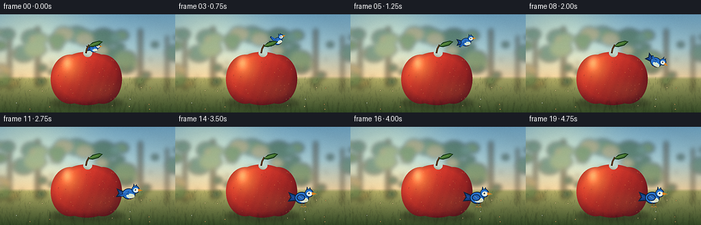
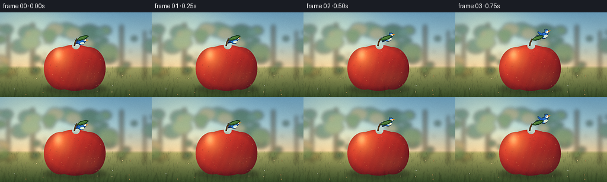

CODING AGENTS AS PIXEL WORLD MODELS
traex/DeepSeek-V4.1-Flash · dynamic_spatial_relationship_0038
点击播放 · 原生 RGB 像素
此结果可播放，但该运行尚未通过最终提交审核。页面展示不代表评测通过。
逐轮保存的候选
回放视频、检查图与代码变化。
每份候选均可单独播放。实际图片检查记录在下方工具轨迹中。
候选 01播放与检查图
点击播放 · 原生 RGB 像素


展开代码变化
--- 上一保存版本
+++ 本次保存版本
@@ -0,0 +1,442 @@
+from pathlib import Path
+import math
+
+import numpy as np
+from PIL import Image, ImageDraw, ImageFilter
+
+import artifact_io
+
+
+WIDTH = 256
+HEIGHT = 144
+FRAME_COUNT = 20
+FPS = 4.0
+SUPERSAMPLE = 4
+S = SUPERSAMPLE
+CASE_DIR = Path(__file__).resolve().parent
+
+
+def rgb(value):
+ return tuple(int(v) for v in value)
+
+
+def scaled_bbox(box):
+ return tuple(int(round(v * S)) for v in box)
+
+
+def vertical_gradient(width, height, stops):
+ y = np.linspace(0.0, 1.0, height, dtype=np.float32)
+ positions = np.array([stop[0] for stop in stops], dtype=np.float32)
+ colors = np.array([stop[1] for stop in stops], dtype=np.float32)
+ channels = [np.interp(y, positions, colors[:, i]) for i in range(3)]
+ image = np.stack(channels, axis=1)
+ return np.repeat(image[:, None, :], width, axis=1)
+
+
+def make_background(rng):
+ width = WIDTH * S
+ height = HEIGHT * S
+ sky = vertical_gradient(
+ width,
+ height,
+ [
+ (0.00, (115, 170, 202)),
+ (0.34, (166, 203, 211)),
+ (0.63, (238, 212, 166)),
+ (0.66, (172, 170, 104)),
+ (1.00, (58, 82, 42)),
+ ],
+ )
+
+ yy, xx = np.mgrid[0:height, 0:width].astype(np.float32)
+ sun = np.exp(-(((xx - 46 * S) / (78 * S)) ** 2 + ((yy - 22 * S) / (62 * S)) ** 2))
+ sky += sun[:, :, None] * np.array([62, 43, 8], dtype=np.float32)
+ sky = np.clip(sky, 0, 255).astype(np.uint8)
+ background = Image.fromarray(sky, "RGB")
+
+ far = Image.new("RGBA", background.size, (0, 0, 0, 0))
+ draw = ImageDraw.Draw(far)
+
+ # Soft orchard trunks and foliage establish depth without competing with the actors.
+ trunk_color = (82, 65, 42, 145)
+ for x, top, bottom, width_px in [
+ (14, 30, 111, 5),
+ (55, 18, 106, 7),
+ (205, 21, 108, 6),
+ (244, 31, 112, 4),
+ ]:
+ draw.rounded_rectangle(
+ scaled_bbox((x - width_px / 2, top, x + width_px / 2, bottom)),
+ radius=3 * S,
+ fill=trunk_color,
+ )
+
+ foliage_colors = [
+ (57, 94, 70, 165),
+ (91, 122, 70, 155),
+ (126, 143, 84, 135),
+ (72, 112, 91, 145),
+ (157, 124, 64, 115),
+ ]
+ for _ in range(52):
+ cx = rng.uniform(-8, WIDTH + 8)
+ cy = rng.uniform(24, 104)
+ radius = rng.uniform(5, 18)
+ color = foliage_colors[int(rng.integers(0, len(foliage_colors)))]
+ draw.ellipse(scaled_bbox((cx - radius, cy - radius * 0.75, cx + radius, cy + radius * 0.75)), fill=color)
+
+ for _ in range(18):
+ cx = rng.uniform(8, WIDTH - 8)
+ cy = rng.uniform(45, 100)
+ radius = rng.uniform(0.7, 1.7)
+ color = (188 + int(rng.integers(-10, 20)), 92 + int(rng.integers(-10, 20)), 42, 175)
+ draw.ellipse(scaled_bbox((cx - radius, cy - radius, cx + radius, cy + radius)), fill=color)
+
+ far = far.filter(ImageFilter.GaussianBlur(3.2 * S))
+ background = Image.alpha_composite(background.convert("RGBA"), far).convert("RGB")
+
+ ground = Image.new("RGBA", background.size, (0, 0, 0, 0))
+ draw = ImageDraw.Draw(ground)
+ for _ in range(420):
+ x = rng.uniform(0, WIDTH)
+ base_y = rng.uniform(96, HEIGHT + 4)
+ height_px = rng.uniform(1.5, 8.5) * (0.55 + (base_y - 92) / 70)
+ lean = rng.uniform(-2.4, 2.4)
+ shade = int(rng.integers(-22, 25))
+ color = (
+ int(np.clip(61 + shade, 28, 112)),
+ int(np.clip(101 + shade, 45, 142)),
+ int(np.clip(43 + shade * 0.45, 20, 88)),
+ int(rng.integers(70, 150)),
+ )
+ draw.line(
+ [(x * S, base_y * S), ((x + lean) * S, (base_y - height_px) * S)],
+ fill=color,
+ width=max(1, int(0.42 * S)),
+ )
+
+ for _ in range(15):
+ x = rng.uniform(8, WIDTH - 8)
+ y = rng.uniform(105, HEIGHT - 4)
+ petal = rng.choice([(231, 214, 144, 210), (218, 229, 204, 190), (225, 176, 102, 190)])
+ draw.ellipse(scaled_bbox((x - 0.9, y - 0.9, x + 0.9, y + 0.9)), fill=tuple(int(v) for v in petal))
+
+ ground = ground.filter(ImageFilter.GaussianBlur(0.35 * S))
+ background = Image.alpha_composite(background.convert("RGBA"), ground).convert("RGB")
+ return background
+
+
+def make_shadow(center_x, center_y, radius_x, radius_y, opacity):
+ layer = Image.new("RGBA", (WIDTH * S, HEIGHT * S), (0, 0, 0, 0))
+ draw = ImageDraw.Draw(layer)
+ draw.ellipse(
+ scaled_bbox(
+ (
+ center_x - radius_x,
+ center_y - radius_y,
+ center_x + radius_x,
+ center_y + radius_y,
+ )
+ ),
+ fill=(24, 25, 17, int(opacity)),
+ )
+ return layer.filter(ImageFilter.GaussianBlur(3.0 * S))
+
+
+def make_apple_layer(rng):
+ size = (WIDTH * S, HEIGHT * S)
+ mask = Image.new("L", size, 0)
+ draw = ImageDraw.Draw(mask)
+ draw.ellipse(scaled_bbox((78, 55, 175, 133)), fill=255)
+ draw.ellipse(scaled_bbox((74, 59, 131, 131)), fill=255)
+ draw.ellipse(scaled_bbox((122, 59, 178, 131)), fill=255)
+ draw.ellipse(scaled_bbox((121.5, 50.5, 134.5, 62.5)), fill=0)
+ mask = mask.filter(ImageFilter.GaussianBlur(0.22 * S))
+
+ yy, xx = np.mgrid[0:size[1], 0:size[0]].astype(np.float32)
+ nx = (xx / S - 126.0) / 51.0
+ ny = (yy / S - 93.0) / 40.5
+ radial = np.sqrt((nx * 0.92) ** 2 + ny**2)
+ directional = np.clip(0.56 - 0.43 * nx - 0.47 * ny, 0.08, 1.0)
+ spot = np.exp(-(((xx / S - 101.0) / 18.0) ** 2 + ((yy / S - 76.0) / 20.0) ** 2))
+ lower_glow = np.exp(-(((xx / S - 151.0) / 34.0) ** 2 + ((yy / S - 112.0) / 18.0) ** 2))
+ striation = 0.5 + 0.5 * np.sin((nx * 8.0 + ny * 2.2 + 0.2) * math.pi)
+ texture = 0.018 * (striation - 0.5)
+
+ base = np.zeros((size[1], size[0], 3), dtype=np.float32)
+ base[:, :, 0] = 116 + 115 * directional + 17 * spot + texture * 255
+ base[:, :, 1] = 21 + 42 * directional + 42 * spot + 10 * lower_glow + texture * 80
+ base[:, :, 2] = 29 + 18 * directional + 12 * spot + 6 * lower_glow
+
+ warm = np.clip(spot * 0.34 + lower_glow * 0.13, 0, 0.48)
+ base[:, :, 0] = base[:, :, 0] * (1 - warm) + 239 * warm
+ base[:, :, 1] = base[:, :, 1] * (1 - warm) + 125 * warm
+ base[:, :, 2] = base[:, :, 2] * (1 - warm) + 55 * warm
+
+ rim = np.clip((radial - 0.78) / 0.33, 0, 1)
+ base *= (1.0 - 0.33 * rim[:, :, None])
+ base[:, :, 2] += 8 * rim
+
+ specular = np.exp(-(((xx / S - 98.0) / 7.0) ** 2 + ((yy / S - 71.0) / 10.0) ** 2))
+ base += specular[:, :, None] * np.array([57, 67, 50], dtype=np.float32)
+ base = np.clip(base, 0, 255).astype(np.uint8)
+
+ rgba = np.dstack([base, np.asarray(mask, dtype=np.uint8)])
+ apple = Image.fromarray(rgba, "RGBA")
+ detail = Image.new("RGBA", size, (0, 0, 0, 0))
+ draw = ImageDraw.Draw(detail)
+
+ for _ in range(74):
+ x = rng.uniform(79, 174)
+ y = rng.uniform(64, 129)
+ radius = rng.uniform(0.22, 0.62)
+ tint = rng.choice([(236, 164, 91, 70), (92, 35, 29, 65), (255, 205, 136, 55)])
+ draw.ellipse(scaled_bbox((x - radius, y - radius, x + radius, y + radius)), fill=tuple(int(v) for v in tint))
+
+ detail.putalpha(Image.composite(detail.getchannel("A"), Image.new("L", size, 0), mask))
+ apple = Image.alpha_composite(apple, detail)
+
+ # Stem and leaf sit above the fruit.
+ draw = ImageDraw.Draw(apple)
+ draw.line(
+ [(125.5 * S, 57 * S), (127.0 * S, 50 * S), (130.0 * S, 44.5 * S)],
+ fill=(76, 47, 24, 255),
+ width=max(2, int(2.5 * S)),
+ joint="curve",
+ )
+ draw.line(
+ [(126.0 * S, 55 * S), (127.5 * S, 49 * S), (129.4 * S, 45.5 * S)],
+ fill=(139, 88, 38, 220),
+ width=max(1, int(0.7 * S)),
+ )
+
+ leaf_outline = [
+ (128.5, 47.2),
+ (135.0, 41.2),
+ (145.0, 38.5),
+ (150.0, 40.0),
+ (144.0, 45.5),
+ (135.0, 48.0),
+ ]
+ draw.polygon([(x * S, y * S) for x, y in leaf_outline], fill=(30, 61, 31, 255))
+ leaf_inner = [
+ (130.2, 46.0),
+ (136.0, 42.1),
+ (144.4, 39.8),
+ (148.0, 40.3),
+ (143.1, 44.4),
+ (135.2, 46.7),
+ ]
+ draw.polygon([(x * S, y * S) for x, y in leaf_inner], fill=(69, 119, 52, 255))
+ draw.line(
+ [(131.0 * S, 45.6 * S), (142.7 * S, 41.4 * S)],
+ fill=(155, 178, 83, 210),
+ width=max(1, int(0.55 * S)),
+ )
+ return apple
+
+
+def make_bird_image(scale, wing, angle, perched, flip=False):
+ logical_w, logical_h = 72, 58
+ image = Image.new("RGBA", (logical_w * S, logical_h * S), (0, 0, 0, 0))
+ draw = ImageDraw.Draw(image)
+ ox, oy = 34.0, 28.0
+
+ def pt(x, y):
+ return ((ox + x) * S, (oy + y) * S)
+
+ def box(x0, y0, x1, y1):
+ return scaled_bbox((ox + x0, oy + y0, ox + x1, oy + y1))
+
+ outline = (17, 38, 65, 255)
+ body = (43, 116, 205, 255)
+ body_light = (72, 164, 226, 255)
+ wing_dark = (24, 69, 145, 255)
+ wing_mid = (37, 103, 190, 255)
+ belly = (210, 234, 220, 255)
+ cheek = (240, 247, 226, 255)
+
+ tail = [pt(-7, -3), pt(-19, -8), pt(-16, -1), pt(-20, 5), pt(-6, 4)]
+ draw.polygon(tail, fill=outline)
+ inner_tail = [pt(-8, -1.5), pt(-16.5, -5.5), pt(-14.2, -0.5), pt(-17.1, 3.4), pt(-6.5, 2.5)]
+ draw.polygon(inner_tail, fill=wing_dark)
+ draw.line([pt(-15.0, -1.5), pt(-8.0, 0.4)], fill=(65, 132, 201, 220), width=max(1, int(0.55 * S)))
+
+ draw.ellipse(box(-10.5, -7.7, 8.7, 8.2), fill=outline)
+ draw.ellipse(box(-9.5, -6.7, 7.6, 7.1), fill=body)
+ draw.ellipse(box(-4.4, 0.0, 7.5, 6.5), fill=belly)
+ draw.ellipse(box(2.0, 1.5, 7.2, 6.0), fill=(231, 235, 206, 230))
+
+ if perched:
+ draw.ellipse(box(-7.7, -4.6, 3.4, 4.3), fill=outline)
+ draw.ellipse(box(-6.7, -3.7, 2.5, 3.3), fill=wing_mid)
+ draw.arc(box(-6.4, -3.2, 2.8, 3.6), 205, 345, fill=wing_dark, width=max(1, int(0.55 * S)))
+ draw.line([pt(-4.4, -2.3), pt(0.4, 1.8)], fill=(113, 184, 227, 220), width=max(1, int(0.6 * S)))
+ draw.line([pt(-2.6, -1.7), pt(1.2, 2.7)], fill=(18, 60, 130, 220), width=max(1, int(0.45 * S)))
+ else:
+ flap = max(-1.0, min(1.0, wing))
+ if flap >= 0:
+ tip_y = -6.0 - 10.0 * flap
+ back_y = -3.0 - 5.5 * flap
+ wing_points = [
+ pt(-1.0, -3.8),
+ pt(-4.8, back_y),
+ pt(-10.5, tip_y),
+ pt(-13.0, tip_y + 1.5),
+ pt(-9.1, -1.4),
+ pt(-1.2, 1.5),
+ ]
+ feather_end = pt(-11.7, tip_y + 1.4)
+ else:
+ down = -flap
+ tip_y = -5.0 + 14.0 * down
+ back_y = -1.0 + 6.0 * down
+ wing_points = [
+ pt(-1.0, -3.6),
+ pt(-6.0, back_y),
+ pt(-13.0, tip_y),
+ pt(-16.0, tip_y - 1.0),
+ pt(-10.0, 0.8),
+ pt(-1.0, 1.5),
+ ]
+ feather_end = pt(-14.2, tip_y - 0.5)
+ draw.polygon(wing_points, fill=outline)
+ inner = []
+ for x, y in wing_points:
+ px = (x / S - ox) * 0.88
+ py = (y / S - oy) * 0.88
+ inner.append(pt(px, py))
+ draw.polygon(inner, fill=wing_mid)
+ draw.line([pt(-3.0, -2.4), feather_end], fill=wing_dark, width=max(1, int(0.65 * S)))
+ draw.line([pt(-2.2, -1.5), pt(-10.2, -0.7 + flap * 2.0)], fill=(111, 181, 225, 210), width=max(1, int(0.45 * S)))
+
+ # Crest, head, cheek, beak, and eye.
+ draw.polygon([pt(5.4, -10.0), pt(6.4, -14.6), pt(8.7, -10.3), pt(10.3, -14.0), pt(12.1, -9.1)], fill=outline)
+ draw.polygon([pt(6.5, -9.8), pt(7.1, -12.8), pt(8.8, -9.8), pt(10.0, -12.3), pt(11.1, -9.2)], fill=body_light)
+ draw.ellipse(box(3.2, -11.7, 14.4, -0.4), fill=outline)
+ draw.ellipse(box(4.1, -10.9, 13.5, -1.2), fill=body)
+ draw.ellipse(box(5.7, -8.3, 13.0, -2.1), fill=cheek)
+ draw.ellipse(box(7.7, -6.7, 9.4, -4.8), fill=(11, 21, 30, 255))
+ draw.ellipse(box(8.0, -6.5, 8.7, -5.8), fill=(247, 250, 235, 255))
+ draw.polygon([pt(12.9, -7.1), pt(19.4, -4.7), pt(12.8, -3.1)], fill=(239, 142, 35, 255))
+ draw.line([pt(13.2, -5.2), pt(18.0, -4.7)], fill=(120, 68, 25, 230), width=max(1, int(0.45 * S)))
+
+ if perched:
+ for leg_x in (-0.6, 3.8):
+ draw.line([pt(leg_x, 6.6), pt(leg_x - 0.5, 11.8)], fill=(121, 73, 28, 255), width=max(1, int(0.75 * S)))
+ draw.line([pt(leg_x - 0.5, 11.7), pt(leg_x - 2.2, 12.8)], fill=(227, 130, 44, 255), width=max(1, int(0.6 * S)))
+ draw.line([pt(leg_x - 0.5, 11.7), pt(leg_x + 1.1, 12.8)], fill=(227, 130, 44, 255), width=max(1, int(0.6 * S)))
+ else:
+ draw.line([pt(0.8, 6.6), pt(-1.1, 9.4)], fill=(202, 111, 39, 220), width=max(1, int(0.55 * S)))
+ draw.line([pt(3.8, 6.3), pt(2.5, 9.3)], fill=(202, 111, 39, 220), width=max(1, int(0.55 * S)))
+
+ if flip:
+ image = image.transpose(Image.Transpose.FLIP_LEFT_RIGHT)
+ image = image.rotate(angle, resample=Image.Resampling.BICUBIC, expand=True)
+ target = (max(1, int(image.width * scale)), max(1, int(image.height * scale)))
+ return image.resize(target, Image.Resampling.LANCZOS)
+
+
+def bird_pose(frame):
+ keys = [
+ (139.0, 51.0, 0.62, 2.0),
+ (141.0, 48.5, 0.63, 8.0),
+ (145.0, 44.0, 0.65, 18.0),
+ (152.0, 39.0, 0.68, 24.0),
+ (161.0, 37.0, 0.72, 18.0),
+ (171.0, 41.0, 0.76, 7.0),
+ (180.0, 49.0, 0.80, -8.0),
+ (187.0, 60.0, 0.84, -22.0),
+ (192.0, 72.0, 0.88, -31.0),
+ (194.0, 83.0, 0.92, -26.0),
+ (193.0, 92.0, 0.96, -12.0),
+ (191.0, 99.0, 1.00, 0.0),
+ (190.0, 102.0, 1.04, 2.0),
+ (189.0, 104.0, 1.07, 3.0),
+ (188.0, 105.0, 1.09, 1.0),
+ (188.0, 105.0, 1.10, 0.0),
+ (188.0, 104.8, 1.10, 0.0),
+ (188.0, 105.0, 1.10, 0.0),
+ (188.0, 104.8, 1.10, 0.0),
+ (188.0, 105.0, 1.10, 0.0),
+ ]
+ return keys[frame]
+
+
+def render_frame(frame, background, apple, rng):
+ canvas = background.convert("RGBA")
+ x, y, scale, angle = bird_pose(frame)
+
+ # Shadows are painted before actors so the depth ordering remains physically legible.
+ apple_shadow = make_shadow(127.0, 130.0, 54.0, 8.5, 94)
+ canvas = Image.alpha_composite(canvas, apple_shadow)
+
+ flight_shadow_opacity = 0
+ if frame >= 10:
+ flight_shadow_opacity = int(np.clip((frame - 9) / 7.0, 0, 1) * 72)
+ if flight_shadow_opacity:
+ bird_shadow = make_shadow(x + 3.0, 113.0, 12.0 + 2.0 * scale, 3.2, flight_shadow_opacity)
+ canvas = Image.alpha_composite(canvas, bird_shadow)
+
+ perched = frame >= 13
+ if frame <= 2:
+ wing = 0.25 + 0.2 * math.sin(frame * 2.2)
+ elif frame <= 10:
+ wing = math.sin((frame - 2) * 1.55)
+ elif frame <= 12:
+ wing = -0.55 + 0.2 * math.sin(frame * 2.8)
+ else:
+ wing = 0.0
+
+ bird = make_bird_image(scale, wing, angle, perched)
+ bird_position = (int(round(x * S - bird.width / 2)), int(round(y * S - bird.height / 2)))
+
+ # The bird begins behind the apple, exits around its right side, then becomes foreground.
+ if frame < 8:
+ canvas.alpha_composite(bird, dest=bird_position)
+ canvas = Image.alpha_composite(canvas, apple)
+ else:
+ canvas = Image.alpha_composite(canvas, apple)
+ canvas.alpha_composite(bird, dest=bird_position)
+
+ # A few out-of-focus foreground blades reinforce the camera-to-ground separation.
+ foreground = Image.new("RGBA", canvas.size, (0, 0, 0, 0))
+ draw = ImageDraw.Draw(foreground)
+ for i in range(24):
+ base_x = 3.0 + i * 11.1 + rng.uniform(-3.0, 3.0)
+ base_y = HEIGHT + rng.uniform(-1.0, 6.0)
+ tip_x = base_x + rng.uniform(-6.0, 6.0)
+ tip_y = 132.0 - rng.uniform(0.0, 7.0)
+ color = rng.choice([(37, 62, 28, 92), (57, 84, 34, 78), (80, 105, 43, 65)])
+ draw.line([(base_x * S, base_y * S), (tip_x * S, tip_y * S)], fill=tuple(int(v) for v in color), width=max(1, int(1.1 * S)))
+ foreground = foreground.filter(ImageFilter.GaussianBlur(0.9 * S))
+ canvas = Image.alpha_composite(canvas, foreground)
+
+ rgb_image = canvas.convert("RGB")
+ small = rgb_image.resize((WIDTH, HEIGHT), Image.Resampling.LANCZOS)
+ small = small.filter(ImageFilter.UnsharpMask(radius=0.65, percent=72, threshold=2))
+
+ # Gentle lens falloff and deterministic sensor grain keep the tiny frames from looking flat.
+ arr = np.asarray(small, dtype=np.float32)
+ yy, xx = np.mgrid[0:HEIGHT, 0:WIDTH].astype(np.float32)
+ vx = (xx - WIDTH * 0.5) / (WIDTH * 0.5)
+ vy = (yy - HEIGHT * 0.5) / (HEIGHT * 0.5)
+ vignette = np.clip(1.0 - 0.075 * (vx**2 + vy**2), 0.9, 1.0)
+ arr *= vignette[:, :, None]
+ grain = rng.normal(0.0, 1.1, (HEIGHT, WIDTH, 1)).astype(np.float32)
+ arr += grain
+ arr = np.clip(arr, 0, 255).astype(np.uint8)
+ return arr
+
+
+def main():
+ rng = np.random.default_rng(20261110)
+ background = make_background(rng)
+ apple = make_apple_layer(rng)
+ frames = [render_frame(i, background, apple, rng) for i in range(FRAME_COUNT)]
+ artifact_io.save(frames, CASE_DIR)
+ print(f"wrote {FRAME_COUNT} frames to {CASE_DIR}")
+
+
+if __name__ == "__main__":
+ main()
可观测工具轨迹
实际执行的命令与返回图片。
命令 1exit 0
/bin/bash -c "pwd && rg --files -g 'prompt.txt' -g 'GENERATION_RULES.md' -g 'task_spec.json' -g '"'!**/.git/**'"'"
命令 2exit 0
/bin/bash -c "find . -maxdepth 2 -type f -printf '%p %s bytes\\n' | sort | head -200"
命令 3exit 0
/bin/bash -c 'git status --short --branch'
命令 4exit 0
/bin/bash -c 'cat prompt.txt'
命令 5exit 0
/bin/bash -c 'cat GENERATION_RULES.md'
命令 6exit 0
/bin/bash -c 'cat task_spec.json'
命令 7exit 0
/bin/bash -c "sed -n '1,260p' artifact_io.py && sed -n '1,220p' player_template.html"
命令 8exit 0
/bin/bash -c "python - <<'PY'
import PIL, numpy
print('Pillow', PIL.__version__, 'numpy', numpy.__version__)
PY"命令 9exit 0
/bin/bash -c 'python generate.py'
命令 10exit 0
/bin/bash -c 'command -v chafa || command -v viu || command -v jp2 || true'
命令 11exit 0
/bin/bash -c "python - <<'PY'
from PIL import Image
import numpy as np
from pathlib import Path
for i in [0,2,4,6,7,8,10,12,13,16,19]:
a=np.asarray(Image.open(f'frames/{i:02d}.png')).astype(float)
# dark blue pixels characteristic of bird
m=(a[:,:,2]>a[:,:,0]*1.25)&(a[:,:,2]>a[:,:,1]*1.08)&(a[:,:,2]>75)
ys,xs=np.where(m)
if len(xs): print(i, len(xs), (xs.min(),ys.min(),xs.max(),ys.max()), a[ys,xs].mean(0).round(1))
else: print(i,0)
PY"命令 12exit 0
/bin/bash -c "ls -lh pixels.npz index.html inspection.png transition_check.png frames/*.png | tail -8 && python - <<'PY'
import numpy as np
z=np.load('pixels.npz')['pixels']
print('shape', z.shape, 'dtype', z.dtype)
print('frame means', [round(float(z[:,:,i].mean()),1) for i in [0,5,10,15,19]])
PY"命令 13exit 0
/bin/bash -c "python - <<'PY'
from PIL import Image, ImageDraw
import numpy as np
frames=[Image.open(f'frames/{i:02d}.png') for i in range(20)]
# Larger contact sheet with high-contrast labels for local inspection.
sheet=Image.new('RGB',(256*5,(144+22)*4),(18,20,24)); d=ImageDraw.Draw(sheet)
for k,i in enumerate([0,4,7,9,11,13,15,19]):
x=(k%5)*256;y=(k//5)*166
d.text((x+5,y+4),f'{i:02d} / {i/4:.2f}s',fill='white')
sheet.paste(frames[i],(x,y+22))
sheet.resize((1280,664),Image.Resampling.NEAREST).save('.tmp/contact.png')
# Compute pair changes and center crop of landing.
a=np.asarray(frames[19]);b=np.asarray(frames[0])
print('end-start mean abs',np.abs(a.astype(int)-b.astype(int)).mean())
print('landing bbox variance', np.asarray(frames[19]).std(axis=(0,1)).round(1))
PY"命令 14exit 0
/bin/bash -c "python - <<'PY'
from PIL import Image
import numpy as np
for i in range(20):
a=np.asarray(Image.open(f'frames/{i:02d}.png')).astype(int)
m=(a[:,:,2]>125)&(a[:,:,2]-a[:,:,0]>48)&(a[:,:,2]-a[:,:,1]>20)&(a[:,:,0]<115)
ys,xs=np.where(m)
if len(xs):
print(f'{i:02d}: n={len(xs):4d} bbox=({xs.min():3d},{ys.min():3d})-({xs.max():3d},{ys.max():3d}) med=({np.median(xs):.0f},{np.median(ys):.0f})')
else: print(f'{i:02d}: none')
PY"命令 15exit 0
/bin/bash -c "python - <<'PY'
from PIL import Image
import numpy as np
im=Image.open('frames/19.png').convert('RGB')
# enlarge crop around bird and apple
im.crop((65,28,230,128)).resize((660,400),Image.Resampling.NEAREST).save('.tmp/crop19.png')
# quantized ANSI truecolor preview, excluding noisy sky. This lets us visually inspect structure in logs.
a=np.asarray(im.resize((96,54),Image.Resampling.LANCZOS))
chars=' .,:;irsXA253hMHGS#9B&@'
for y in range(0,a.shape[0],2):
line=''
for x in range(a.shape[1]):
r,g,b=a[y,x]
lum=.2126*r+.7152*g+.0722*b
line+=chars[min(len(chars)-1,int(lum/256*len(chars)))]
print(line)
PY"命令 16exit 0
/bin/bash -c "python - <<'PY'
from PIL import Image
im=Image.open('inspection.png')
print(im.size)
# The inspection sheet includes eight key frames. Crop the final frame and upscale for a readable color block preview.
w,h=256,144
for idx,fi in enumerate([0,3,7,10,13,15,17,19]):
x=(idx%4)*w;y=(idx//4)*(h+21)+21
im.crop((x,y,x+w,y+h)).resize((w*2,h*2),Image.Resampling.NEAREST).save(f'.tmp/key{fi:02d}.png')
PY"命令 17exit 0
/bin/bash -c "python - <<'PY'
from PIL import Image
im=Image.open('frames/19.png').convert('RGB').resize((64,36),Image.Resampling.LANCZOS)
p=im.load()
for y in range(0,36,2):
s=''
for x in range(64):
r,g,b=p[x,y]; R,G,B=p[x,y+1]
s+=f'\\x1b[38;2;{r};{g};{b}m\\x1b[48;2;{R};{G};{B}mâ'
print(s+'\\x1b[0m')
PY"命令 18exit 0
/bin/bash -c "python -m py_compile generate.py && python - <<'PY'
import json, pathlib, wave
import numpy as np
from PIL import Image
spec=json.loads(pathlib.Path('task_spec.json').read_text())
z=np.load('pixels.npz')['pixels']
assert z.shape==(spec['height'],spec['width'],spec['frames']), z.shape
assert z.dtype==np.uint32
frames=sorted(pathlib.Path('frames').glob('*.png'))
assert len(frames)==spec['frames']
for p in frames:
im=Image.open(p)
assert im.mode=='RGB' and im.size==(spec['width'],spec['height']), (p,im.mode,im.size)
assert pathlib.Path('index.html').is_file() and pathlib.Path('inspection.png').is_file()
print('contract ok:', z.shape, len(frames), 'frames', 'audio', spec['audio'])
print('files:', ', '.join(sorted(p.name for p in pathlib.Path('.').iterdir() if p.is_file())))
PY"保存候选 1 份；完成命令 18 次；可验证图片返回 0 张。原始 API 响应与完整日志保留在本地。